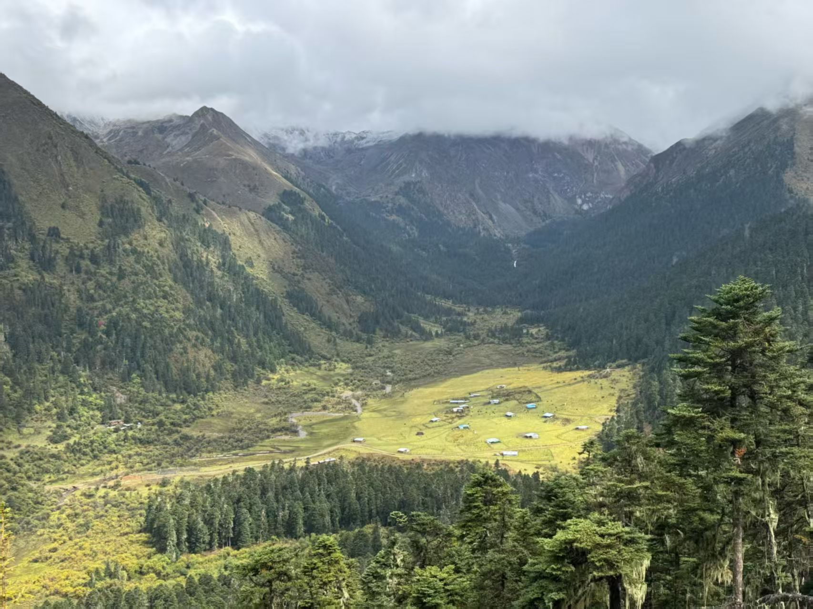
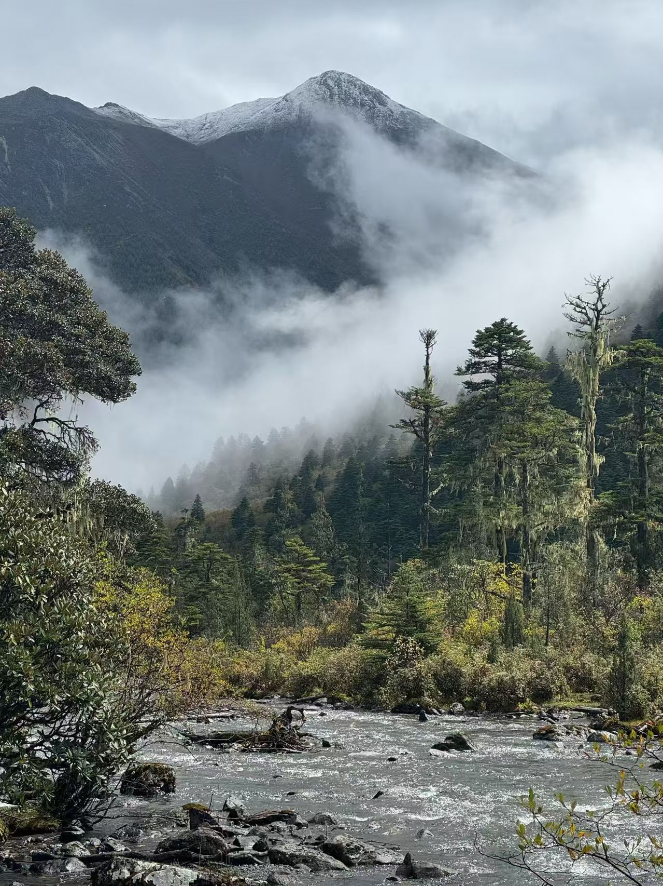

Miscellaneous
Thanks for stopping by! 😊 I enjoy meeting new people and swapping stories. My friends describe me as easygoing and dependable, and I’m always up for a good conversation. I love to travel, hike, and climb mountains. When I’m somewhere new, I like to explore, take in the scenery, and learn about local life and culture.
If you have a favorite trail, know a place worth visiting, or would like to go hiking together, feel free to contact me.
Travel
Diqing Tibetan Autonomous Prefecture · Shangri-La
I recently spent several days in Shangri-La, hiking through valleys and climbing a snow-covered mountain. The trip also gave me a chance to learn about everyday life and customs in the local Tibetan community. In the first photo, clouds still hang over the peaks and sunlight has just reached the meadow below. It reminded me of a scene from The Legend of Zelda: Breath of the Wild.




Life at NGai Lab
The University of Hong Kong · Hong Kong SAR
The lab is a friendly place to work. Prof. Ngai Wong often gets us together for a meal, sometimes in a small group and sometimes with the whole lab.


Tsinghua graduation
Tsinghua University · Beijing
In , I graduated from Tsinghua University with a Master of Engineering in Electronic Information.